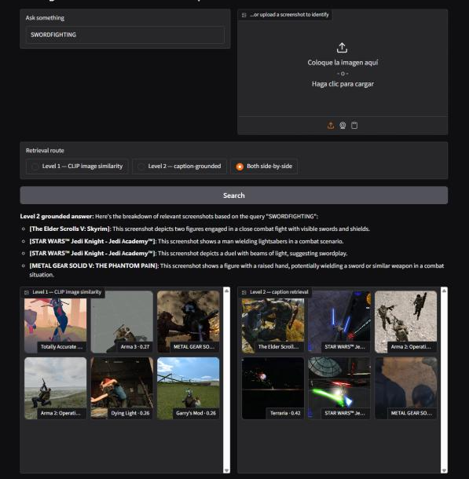
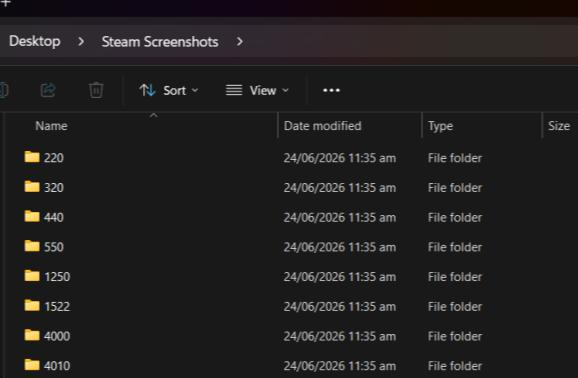
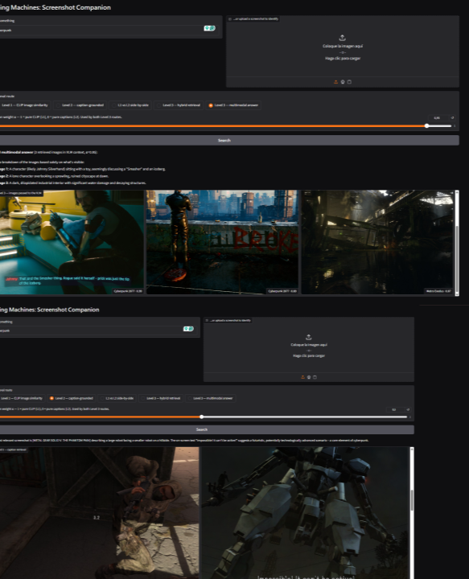
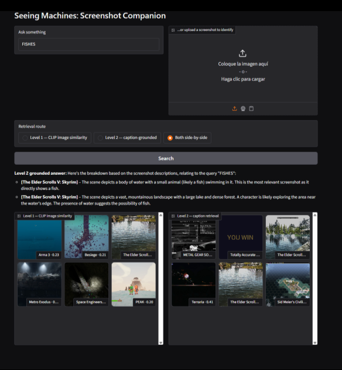
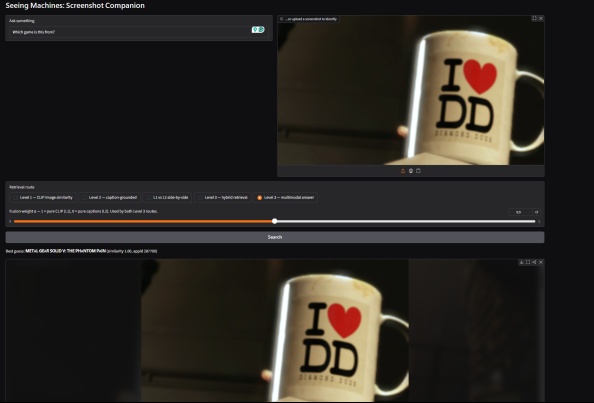
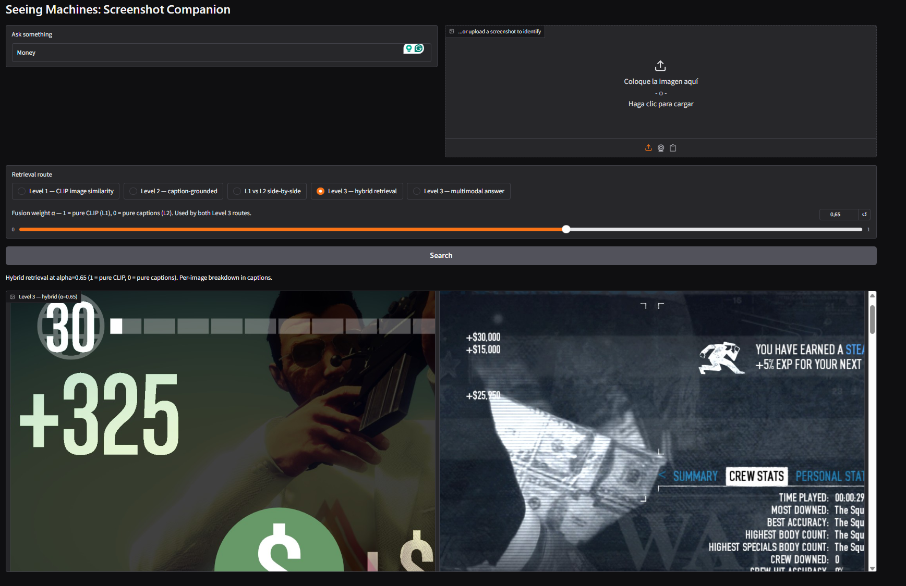
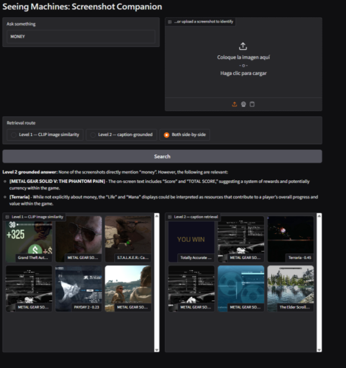
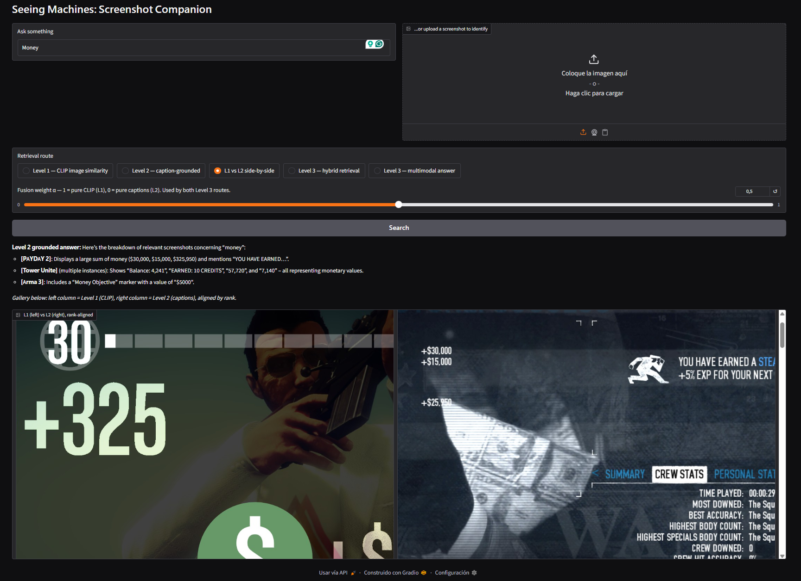
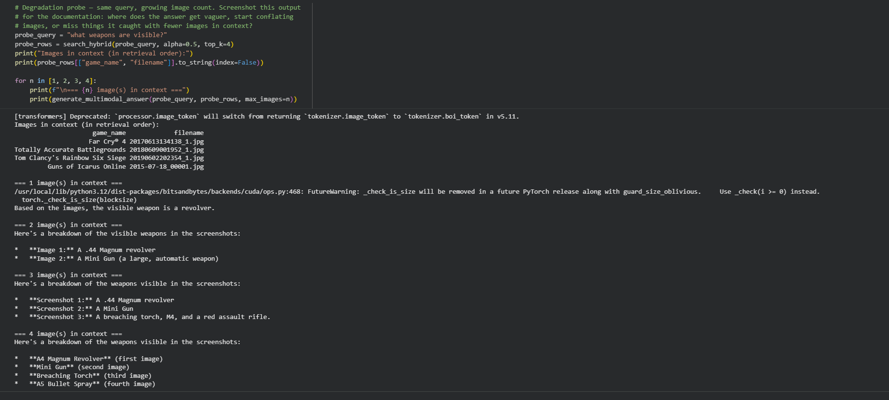

470 screenshots, 72 games, and a machine that tells me what it thinks it saw.

The Screenshot Companion is a multimodal retrieval system built over my personal Steam screenshot archive: 470 images collected across 72 games and roughly fourteen years of playing. It answers questions like "pull up all screenshots from Cyberpunk 2077", "show me a nighttime city street", or "what game is this from?".
The system runs three retrieval routes over the same corpus. Level 1 embeds every image with CLIP and searches by visual similarity. Level 2 has Gemma 3 4B write a structured JSON description of every screenshot, embeds those descriptions as text, and searches over the words instead of the pixels. Level 3 fuses both scores with a user-controlled weight, passes retrieved images directly into the VLM's context at answer time, and measures all three routes against an evaluation set. Because I know this archive intimately, I could catch the machine every time it saw something that was not there. Documenting those moments turned out to be most of the work, and most of the point.
I started on June 24, 2026. Steam told me I had 579 screenshots on my profile, which meant I already owned a corpus that satisfied every requirement of the brief: personal, large enough, and known to me down to the individual image. I remember taking most of these. That memory is the ground truth this whole project leans on.
Steam organizes downloaded screenshots into folders named by each game's numeric App ID, so the archive arrived with metadata already attached: ROOT/<appid>/screenshots/<file>. Resolving those IDs to readable game names gave every image a verified label without any model guessing involved. After deduplication the working corpus settled at 470 images across 72 App IDs, from Half-Life 2 (2004) to PEAK (2025).
This is above the 50 to 150 image target the brief sets for Levels 1 and 2, and above the 300 ceiling mentioned for Level 3. I kept the full set deliberately. Captioning cost was already paid and cached, and a larger corpus gives the retrieval comparison and the evaluation more distractors to trip over, which is where the findings live. The genre skew is real and acknowledged: this archive leans heavily toward shooters and military sims, because that is apparently who I was between 2010 and 2016.

OpenCLIP ViT-B/32 embeds every image once into a joint image-text space. A text query lands in the same space and cosine similarity ranks the corpus. "Pull up all screenshots from X" bypasses the embeddings entirely and filters on the App ID metadata, because the folder structure already guarantees that answer and there is no reason to make a model guess at something I know. Uploading an unsorted screenshot runs it through the same space for a nearest-neighbor identification with a confidence score.
Gemma 3 4B, quantized to 4-bit for the free Colab T4, wrote one structured JSON description per screenshot. Designing that schema was the core decision of the level. Two fields carry most of the weight. visible_elements is an explicit list of objects in frame, which exists because a whole-image CLIP embedding dilutes small details into the average of the scene: a fish in the corner of a room becomes "indoor scene" and is unfindable. A word in a list stays findable. guessed_genre_or_title is the model's own blind guess at what game it is looking at. The captioner is never told the real game name, so comparing its guesses against the App ID ground truth generates mis-seeing evidence automatically, for all 470 images, without me inventing a single test case.
Captions embed with a dedicated sentence-transformer (all-MiniLM-L6-v2) and retrieval runs over those vectors. At answer time the retrieved captions go back into Gemma as text context and it answers from them.
Three additions. First, hybrid retrieval fuses both similarity scores into one ranking with a slider for the weight α, where 1 is pure CLIP and 0 is pure captions. The scores had to be min-max normalized per query before fusing, because CLIP cosines on this corpus cluster around 0.2 to 0.3 while MiniLM similarities range up to 0.6, and raw fusion lets the caption route quietly win at every slider position. Second, multimodal answering passes the retrieved images themselves into Gemma's context, capped at three because each image costs the model roughly 256 tokens and small VLMs degrade as the count rises. Third, an evaluation layer measures precision@5 for all three routes against queries with known answers.
Everything expensive is cached to the repository: CLIP embeddings, the caption JSON, caption embeddings, and the App ID mapping. A fresh runtime executes the whole notebook without recomputing any of it, which also means grading requires no GPU hours. The captioning cell checks the cache and skips itself.
A tour of queries where the routes behave differently, because those are the ones worth explaining. Full documented set in the notebook's comparison section.




Every case below is a documented failure with a mechanism, in chronological order of discovery. The raw evidence files live in the repository (misseeing_truncation_failures.json).
My first optimization pass cut the caption generation budget from 300 tokens to 150 to speed up a four-hour captioning run. Overnight, 69% of all captions came back as invalid JSON. Every single failure was the same shape: the model wrote a good description, ran out of budget mid-sentence, and never reached the closing brace.
Mechanism: generation quality was never the problem, budget arithmetic was. The schema plus a verbose description simply needs more than 150 tokens. Restoring the 300-token budget and re-running only the failed images fixed 318 of the 324. Lesson logged: speed optimizations that touch output length need a validity check before an overnight run, and per-image caching meant the disaster cost one night instead of the whole corpus.
Six images kept failing even at 300 tokens. All six contain enormous amounts of on-screen text: multiplayer scoreboards, Space Engineers HUD readouts with thruster and reactor stats. My schema said visible_text should be transcribed "verbatim if legible", and the model obeyed to the point of self-destruction, faithfully typing out sixteen identical player health entries until the budget died.
Mechanism: an unbounded instruction meets a bounded budget. The prompt itself created this failure mode. Rewriting the field to ask for a short summary, twenty words maximum, fixed five of the six. This is my favorite class of failure in the project because the machine did exactly what I asked, and what I asked was impossible.
One caption survived every fix. A 2012 Garry's Mod screenshot produced a complete, accurate, well-structured description that no parser would accept. Halfway through its element list, the model silently switched from straight quotes to typographic curly quotes.
Mechanism: the model's training data is full of prose where curly quotes are correct punctuation, and mid-generation it drifted into that register. To a human reader the output is flawless JSON. To json.loads it is garbage. A one-line normalization before parsing fixed it, and the case earns its card because it is a different species of failure entirely: not running out of room, but producing output that looks right and is wrong at the character level.
With captioning finally clean, Level 2 retrieval turned out to be quietly broken. The same handful of screenshots surfaced for every query. A Terraria fireworks shot scored 0.39 to 0.45 for "GRENADE", "FISHES", "LOSING" and "MONEY", four queries with nothing in common. A "YOU WIN" screen and two Metal Gear post-mission reports appeared in nearly every result set.
Mechanism, in two parts. I had reused CLIP's text encoder to embed the captions, for the appealing reason of keeping one model stack. But CLIP's text encoder truncates at 77 tokens, and my flattened captions routinely exceed that, so their tails got chopped and what survived was partly shared boilerplate. And CLIP's text space was trained to align text with images, never text with text, so its geometry crowds many caption vectors near the center where they sit a little close to every query. A few captions became hubs that matched everything.
The fix was swapping in a purpose-built sentence embedding model (all-MiniLM-L6-v2) for the caption side, a contained one-cell change. The hubs vanished immediately: "MONEY" started returning the GTA V cash HUD, "SWORDFIGHTING" kept its lightsabers, and the Terraria fireworks finally stopped attending every party.


This one is a failure I built on purpose. Because the captioner is never told the real game name, its blind guesses in guessed_genre_or_title can be compared against the App ID ground truth across the whole corpus. The guesses are a portrait of how a small VLM sees games: Cyberpunk 2077 becomes "Cyberpunk Metropolis", Space Engineers becomes "skybound explorers", and nearly everything with a gun becomes "military shooter". The route-level consequence shows up in the atlas: caption retrieval is structurally incapable of answering title queries, and that is a property of my schema decision, not of the model.
The brief warns that small VLMs degrade with multiple images in context, and asks for that degradation to be documented rather than hidden. I ran the same question ("what weapons are visible?") through the multimodal answering mode with one, two, three and four retrieved images in context.

Two benchmarks, both measuring precision@5: of each route's top five results, how many are actually correct. The routes are CLIP-only (Level 1), caption-only (Level 2), and hybrid fusion at α=0.5 (Level 3).
Queries are game names, and the correct answers are by definition the files inside that game's own App ID folder. Neither retrieval route ever saw those labels, so this is a fair fight, and it is one where I could predict the outcome in advance: the caption route should lose badly, because game titles were deliberately withheld from the captioner, while CLIP has seen most of these games captioned all over the web.
| Route | Mean p@5 | Predicted |
|---|---|---|
| Level 1 (CLIP) | 0.57 | high |
| Level 2 (captions) | 0.12 | low, by design |
| Level 3 (hybrid, α=0.5) | 0.42 | between the two |
Ten semantic queries ("a dog or wolf", "snowy landscape", "an inventory menu", and deliberately, "a fish"). For each query I judged the pooled union of all three routes' top five results, marking which retrieved images were actually relevant. This is standard pooling from information retrieval: it measures precision honestly while only requiring me to judge what was retrieved, around fifteen images per query, rather than hand-labeling 470.
| Route | Mean p@5 |
|---|---|
| Level 1 (CLIP) | 0.44 |
| Level 2 (captions) | 0.39 |
| Level 3 (hybrid, α=0.5) | 0.44 |
The averages tie, and the averages are the least interesting number on this page. The routes succeed on different species of query. CLIP alone found "a medieval knight", "snowy landscape", "golden hour" and "a scoreboard": atmosphere, lighting, visual texture, things nobody writes down. The caption route alone found "a sports car", "a dog" and "a management menu": nameable things that survive being turned into words. The hybrid at a fixed 0.5 matched CLIP's hit rate without beating it, inheriting wins from both parents but also diluting some of each parent's strongest signals. Which is the honest argument for the slider: there is no single correct weighting, only a correct weighting per query. Both zero-gold probes ("a fish", "nudity") behaved exactly as predicted and are reported as undefined rather than as zeros.
A known limitation of the pooled method, stated plainly: it cannot see relevant images that no route retrieved, so it measures precision and says nothing about recall. An image all three routes missed is invisible to this benchmark.
The brief said documented failure analyzed well is worth more than concealed failure, and this project tested whether I believed that. The captioning run failed at 69% on the first overnight attempt. The retrieval route I was proudest of turned out to have collapsed into a handful of hub images. Both of those nights felt terrible and both produced the best material on this page. Somewhere around Case 04 I stopped experiencing failures as setbacks and started experiencing them as the deliverable, which I suspect was the point of the course.
The single decision I would defend hardest is keeping the captioner blind to game names. It cost the caption route any chance at title queries, and it bought me a corpus-wide, automatically generated record of how a small vision model actually interprets game imagery when nobody tells it the answer. That trade is the project in miniature: every route sees something, no route sees everything, and the design work is deciding which blindness you can live with.
On process: this project was built in collaboration with AI assistants, mainly Claude for architecture and debugging, with the occasional detour through Gemini that mostly taught me to be suspicious of confident fixes. All of it is documented in my process notes, including the fixes that made things worse before they made things better. The judgment calls, the schema, the corpus, the evaluation labels and every decision about what counts as a failure are mine.
What I would build next: the degradation probe suggests the multimodal mode wants a smarter image budget, choosing one sharp image over three redundant ones. And the hub collapse episode makes me want to visualize the embedding spaces directly, because I found that failure by squinting at repeated thumbnails when a two-dimensional projection would have shown it in seconds.
appdetails), used once during development to resolve App IDs, then cached.